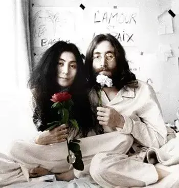

关于爱情，他们是这样的。
约翰.列侬写给小野洋子《Oh My Love》
Oh My Love - John Lennon
哦 我的爱人 - John Lennon
Oh my love for the first time in my life
哦 我的爱人 我人生中第一次
My eyes are wide open
我的眼界如此开阔
Oh my lover for the first time in my life
哦 我的爱人 我人生中第一次
My eyes can see
我的眼睛看得如此清晰
I see the wind oh I see the trees
我看到了风的颜色 我看到了郁郁葱葱的树木
Everything is clear in my heart
我的内心一切都无比清澈
I see the clouds oh I see the sky
我看到了云彩 我看到了天空
Everything is clear in our world
我们的世界一切都如此清朗
Oh my love for the first time in my life
哦 我的爱人 我人生中第一次
My mind is wide open
我的思想如此开阔
Oh my lover for the first time in my life
哦 我的爱人 我人生中第一次
My mind can feel
我的思绪如此清晰
I feel sorrow oh I feel dreams
我感受到了苦楚 感受到了梦想
Everything is clear in my heart
我的内心一切都无比清澈
I feel life oh I feel love
我感受到了生命力 我感受到了爱
Everything is clear in our world
我们的世界一切都如此清朗
小野洋子写给约翰.列侬《Mrs. Lennon 》
Mrs. Lennon - Yoko Ono
列侬太太 - 小野洋子
Mrs Lennon oh Mrs Lennon
列侬太太 哦 列侬太太
Checking the sky to see if there's no clouds
观察天空看看这里是否有云
There's no clouds
这里没有云
Oh then I guess it must be alright
哦 我猜这一定是好的
Mrs Lennon oh Mrs Lennon
列侬太太 哦 列侬太太
Making the tea and watching the sea
煮茶然后看着大海
There's no waves
这里没有海浪
Oh then I guess it must be alright
哦 我猜这一定是好的
Silver spoon oh silver spoon
银汤匙 哦 银汤匙
I lost my silver spoon
我丢了我的银汤匙
And our children oh our children
还有我们的孩子 哦 我们的孩子
Did they have to go to war
他们必须要去打仗吗
Yes my love it's okay
是的 我的爱人 这没关系
Half the world is always killed you know
你要知道世界上一半的人都会死
Husband john extended his hand
丈夫约翰伸出双手
Extended his hand to his wife
对妻子伸出双手
And he finds and suddenly he finds
突然他发现
That he has no hands
他没有了手
They've lost their bodies
他们已经失去了他们的身体
They've lost their bodies
他们已经失去了他们的身体
Yes they lost their bodies
是的 他们失去了他们的身体
Neither of them oh neither of them
他们两人 哦 他们两人
Never left each other
彼此从未离开
Yes my love it's okay
是的 我的爱人 这没关系
Half the world is always dying you know
你要知道世界上一半的人都会死
约翰.列侬被枪杀后，小野洋子写给列侬《Nobody Sees Me Like You Do 》
Nobody Sees Me Like You Do - Yoko Ono
你最懂我 - 小野洋子
I see your face looking into the space
我看着你 盯着空气发呆
All tired and worried
疲惫又焦虑的样子
Why does it have to be like this you and i
为什么你和我 我们要发展成这样的关系
I wanted us to be happy
我只想要彼此能开心
No one can see me like you do
没有人像你懂我
No one can se you like I do
也没有人像我了解你
I see your face with a trace of life
我看着你的脸 仿佛能看到人生的轨迹
Being a wife and a woman
成为人妻 成为女人
If I ever hurt you please remember
如我不小心伤害了你 请记得
I wanted you to be happy
我只想要你开心
Is there anything I want more
如果还有什么我想要的
More than your trust and understanding
那就是你的信任与理解
No one can see me like you do
没有人像你懂我
No one can se you like I do
也没有人像我了解你
I wanna quit moving
我不想动了
I wanna quit running
我不想再奔波了
I wanna relax and be tender
我想歇一歇 尝试温柔一点
I wanna see us together again
想我们还能回到过去
Rocking away in our walnut chairs
坐在我们的核桃椅上旋转
Even with your warmth and closeness
你的温暖与亲密仿佛还在
The feeling of loneliness hangs over like a curse
但孤单的感觉却如同诅咒 无法消除
No one can see me like you do
没有人像你懂我
No one can se you like I do
也没有人像我了解你
Even with our dreams and yearnings
即使想着我们的梦想与挣扎
The feeling of loneliness hangs over like a thirst
但孤单的感觉仍如干渴 无法消解
No one can see me like you do
没有人像你懂我
No one can se you like I do
也没有人像我了解你
No one can see me like you do
没有人像你懂我
No one can se you like I do
也没有人像我了解你
听歌不需要多讲，节日快乐
-END-
相关推荐
点击蓝字直接打开
▼
爱情，众水不能熄灭
这里没有挑逗你眼目情欲的小鲜肉
也没有挑动你肉体情欲的段子
更没有膨胀你今生骄傲的鸡血
我们只在乎那些最质朴真诚的作品
在那里我们才能恢复真正的想象力
我们也坚信这才是我们真正需要的

ID:Six_hundred_hits
长按二维码，一键关注
【六百击】
电影评论
尽情分享朋友圈

微信二维码打赏通道